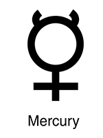

Меркурий
 Меркурий относится к внутренним планетам, так как его орбита лежит внутри орбиты Земли. После лишения Плутона в 2006 году статуса планеты Меркурию перешло звание самой маленькой планеты Солнечной системы. Видимая звёздная величина Меркурия колеблется от 1,9 до 5,5, но его нелегко заметить по причине небольшого углового расстояния от Солнца (максимум 28,3°). О планете пока известно сравнительно немного. Только в 2009 году учёные составили первую полную карту Меркурия, используя снимки аппаратов «Маринер-10» и «Мессенджер». Естественных спутников у планеты не обнаружено.
Меркурий относится к внутренним планетам, так как его орбита лежит внутри орбиты Земли. После лишения Плутона в 2006 году статуса планеты Меркурию перешло звание самой маленькой планеты Солнечной системы. Видимая звёздная величина Меркурия колеблется от 1,9 до 5,5, но его нелегко заметить по причине небольшого углового расстояния от Солнца (максимум 28,3°). О планете пока известно сравнительно немного. Только в 2009 году учёные составили первую полную карту Меркурия, используя снимки аппаратов «Маринер-10» и «Мессенджер». Естественных спутников у планеты не обнаружено.
 Меркурий — самая маленькая планета земной группы. Его радиус составляет всего 2439,7 ± 1,0 км, что меньше радиуса спутника Юпитера Ганимеда и спутника Сатурна Титана. Масса планеты равна 3,3·1023 кг. Средняя плотность Меркурия довольно велика — 5,43 г/см, что лишь незначительно меньше плотности Земли. Учитывая, что Земля намного больше по размерам, значение плотности Меркурия указывает на повышенное содержание в его недрах металлов. Ускорение свободного падения на Меркурии равно 3,70 м/с. Вторая космическая скорость — 4,25 км/с. Несмотря на меньший радиус, Меркурий всё же превосходит по массе такие спутники планет-гигантов, как Ганимед и Титан.
{kind=link}
Астрономический символ Меркурия представляет собой стилизованное изображение крылатого шлема бога Меркурия с его кадуцеем.